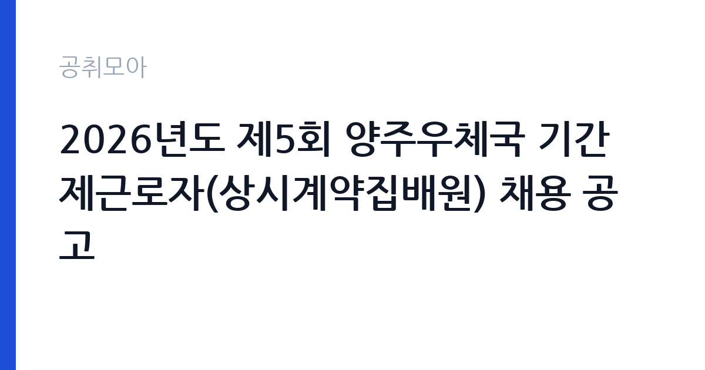

[국가기관] 2026년도 제5회 양주우체국 기간제근로자(상시계약집배원) 채용 공고
과학기술정보통신부 우정사업본부 경인지방우정청 양주우체국 · 경기 · 마감 2026-10-08 (D-4) · 출처 나라일터

한눈에 보는 모집 조건
| 기관 | 과학기술정보통신부 우정사업본부 경인지방우정청 양주우체국 |
|---|---|
| 공고명 | 2026년도 제5회 양주우체국 기간제근로자(상시계약집배원) 채용 공고 |
| 고용형태 | 공무직 |
| 근무지 | 경기 |
| 게시일 | 2026-10-02 |
| 마감일 | 2026-10-08 (D-4) |
지원자격, 이렇게 읽으세요
- 상시계약집배원 1명
- 접수 ~2026-10-08 마감
- 세부 조건은 원문 공고문 확인
모집 분야는 상시계약집배원 1명이며 세부 응시자격은 원문 공고문에서 확인하셔야 합니다. 집배원 채용은 통상 운전면허 소지 여부와 지역 거주 요건, 신체 조건을 중심으로 심사합니다. 이륜차 운전이 포함될 수 있어 관련 면허와 운전 경험을 미리 정리해 두시는 것이 좋습니다. 상시계약집배원은 기간제이지만 상시적으로 근무하는 형태로, 우체국 현장 인력의 한 축을 맡습니다. 지원자격에 나이 제한이나 거주지 제한이 있는지 원문에서 대조하십시오.
이 공고의 포인트
이 공고의 매력은 우정직 공무원으로 가는 발판이 될 수 있다는 점입니다. 상시집배원 경력은 우정직 공무원 채용 때 호봉에 반영될 수 있어, 공무원을 목표로 하는 분께 현장 경험을 쌓는 통로가 됩니다. 양주 지역 거주자에게는 출퇴근이 편한 공공기관 일자리이며, 4대 보험과 퇴직금이 적용되는 점도 장점입니다. 다만 모집 인원이 1명이고 접수 기간이 10월 8일까지로 매우 짧아 서두르지 않으면 기회를 놓칠 수 있습니다. 운전과 야외 근무에 자신 있는 분께 맞는 공고입니다.
전형은 어떻게 진행되나
원서 접수 마감은 2026년 10월 8일이며 이후 전형 단계는 원문 공고문에서 확인하셔야 합니다. 우체국 집배원 채용은 통상 서류 심사와 면접, 필요시 실기 성격의 검증으로 진행됩니다. 접수 방법이 방문인지 우편인지 온라인인지 원문에서 확인하고 즉시 접수하십시오. 마감까지 며칠 남지 않았으므로 증빙 서류는 오늘 발급받아 두시는 것이 좋습니다. 채용 문의는 양주우체국 지원과로 하실 수 있습니다.
이런 분께 추천해요
- 양주 인근에 거주하며 운전과 야외 근무에 자신 있는 분께 가장 적합합니다.
- 우정직 공무원을 목표로 현장 경력과 호봉을 쌓고 싶은 분께 추천합니다.
- 공공기관 소속 안정적인 현장직을 찾는 분께 잘 맞습니다.
지원 전 체크리스트
- 마감일이 10월 8일로 임박했으니 접수 방법 확인 후 즉시 지원하십시오.
- 운전면허 종류와 거주지 요건 같은 세부 자격을 원문에서 대조하십시오.
- 이륜차 배달과 야외 근무가 가능한지 체력 조건을 점검하십시오.
- 계약 형태와 계약 기간, 보수 조건을 원문 공고문에서 확인하십시오.
모집 일정과 제출 타이밍
원서 접수 마감일은 2026년 10월 8일로 일주일도 남지 않았습니다. 오늘이나 내일 중으로 접수하시는 것을 권장하며 증빙 서류 발급을 미루지 마십시오. 이후 서류 심사와 면접 일정은 원문 공고문에 안내되어 있으니 원문에서 확인하십시오. 접수 기간이 짧은 공고는 막판 혼잡이 생길 수 있어 이른 제출이 유리합니다.
직무 이해하기: 국가기관
상시계약집배원은 우편물과 소포의 수집·배달을 담당하는 현장직입니다. 담당 구역의 우편물을 오토바이나 차량으로 배달하고 등기와 소포를 취급하며, 배달 중 민원 응대도 맡습니다. 날씨와 관계없이 야외 근무가 이어지므로 체력과 안전 운전이 핵심 역량입니다. 양주우체국 관할 구역에서 근무하게 되며 구체적인 담당 구역과 근무 형태는 원문 공고문에서 확인하십시오.
자기소개서 작성 팁
지원서에는 운전 경험과 지역 지리를 아는 점을 어필하십시오. 이륜차나 차량 운전 경력, 양주 지역 거주로 인한 지리 이해도를 구체적으로 쓰시면 좋습니다. 배달이나 택배, 현장직 경험이 있다면 건수와 기간을 숫자로 보여주십시오. 궂은 날씨에도 성실히 일할 수 있다는 책임감과 안전 운전 의식을 강조하십시오. 분량은 간결하게 핵심 위주로 정리하십시오.
면접 준비 포인트
면접에서는 운전 능력과 안전 의식을 묻는 질문이 나올 가능성이 높습니다. 사고 경험과 예방 습관, 야외 근무에 대한 각오를 묻는 질문에 대비하십시오. 양주 지역 지리와 배달 동선 이해도도 물을 수 있으니 미리 파악해 두시면 좋습니다. 민원 응대 경험과 친절 마인드도 보여주십시오. 단정한 복장으로 성실한 인상을 주는 것이 기본입니다.
급여·근무조건 읽는 법
이 공고의 정확한 보수는 원문 공고문에서 확인하셔야 합니다. 참고로 2025년 우체국 상시계약집배원 채용 공고 기준으로는 기본급이 195만 원대 수준이며, 여기에 급식비와 직무수당, 운전수당으로 월 4만 원에서 10만 원 정도가 붙는 구조입니다. 명절상여는 기본급의 60퍼센트 내외로 지급되고 3년 근무 후부터는 근속수당이 분기별로 지급됩니다. 4대 보험이 적용되고 맞춤형 복지포인트가 지급되는 점도 장점입니다. 다만 이는 2025년 공고 기준이므로 2026년 이번 공고의 실제 보수와는 다를 수 있어 원문 확인이 필요합니다.
자주 묻는 질문
- 상시계약집배원은 정규직인가요?
기간제 근로자 신분이지만 상시적으로 근무하는 형태로 퇴직금과 4대 보험이 적용됩니다. 우정직 공무원과는 신분이 다르며 공무원연금이 아닌 국민연금이 적용됩니다. - 우정직 공무원이 되는 데 도움이 되나요?
상시집배원 경력은 우정직 공무원 채용 시 호봉에 반영될 수 있어 공무원 준비와 병행하는 분이 많습니다. 현장 경험이 승진과 적응에도 도움이 됩니다. - 어떤 운전면허가 필요한가요?
세부 면허 요건은 원문 공고문에 명시되어 있습니다. 이륜차 배달이 포함될 수 있으니 관련 면허 보유 여부를 원문에서 확인하십시오.
함께 보면 좋은 공고
[국가기관] 한국방송통신대학교 대구경북지역대학 청사관리직(미화방호) 채용공고(무기계약직(기간제계약직)) — 마감 2026-10-15[국가기관] 국립창원대학교 입학과 기간제근로자(입학사정관) 채용 공고 — 마감 2026-10-12[국가기관] 2026년 인제경찰서 무기계약(보일러 등 시설관리) 근로자 채용 재공고 — 마감 2026-10-08출처: 나라일터 공개정보를 바탕으로 공취모아가 정리한 안내글입니다. 모집 조건·일정은 변경될 수 있으니 지원 전 반드시 원문 공고문을 확인하세요. 본 글은 정보 제공용이며 합격을 보장하지 않습니다.